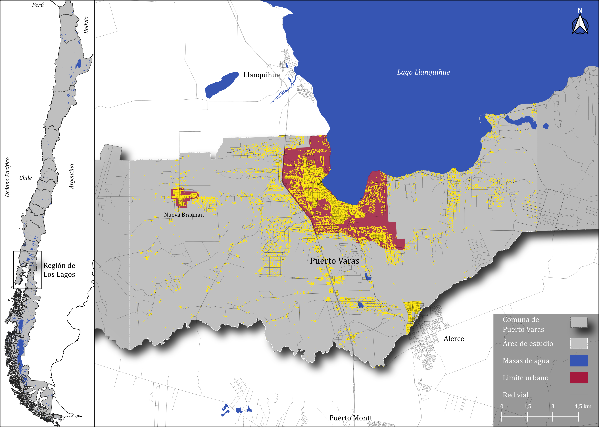

Crecimiento Urbano en Pandemia
Modelado de patrones urbanos con autómatas celulares en Puerto Varas. Resultados preliminares presentados en el Congreso de Geografía 2025.
Geógrafo interesado en las ciudades, los datos y el poder de los mapas para entender el espacio urbano.
Trabajo en la intersección del análisis espacial y el pensamiento urbano crítico.
Ver Proyectos ContáctameModelado de patrones urbanos con autómatas celulares en Puerto Varas. Resultados preliminares presentados en el Congreso de Geografía 2025.
Análisis de las principales tendencias de migración interna, destacando las comunas que han ganado o perdido población (La Tercera).

Exploración de los cambios migratorios locales revelados por el censo de 2024 en la Región de Valparaíso.
Hola a todos, soy Jorge Aravena de Valdivia, Chile. Actualmente trabajo como Analista Espacial en el Centro de Inteligencia Territorial de la Universidad Adolfo Ibáñez.
Creo que la geografía no se trata solo de describir el mundo, sino de cuestionarlo. Especialmente cuando se trata de desigualdad, planificación y las estructuras invisibles que dan forma a la vida cotidiana.
Además de ser analista, me encanta:
Diplomado en Planificación y Gestión Urbana Integrada
Destacado rendimiento académico que resultó en una beca de intercambio en la Universidad de São Paulo, Brasil(2022).
GeNoLab es un espacio que estoy construyendo para aplicar análisis espacial complejo a preguntas tontas.
Aquí encontrarás algunos de esos experimentos que nadie pidió, pero que hice de todos modos.
Indicador de accesibilidad a locales que venden completos en Santiago.